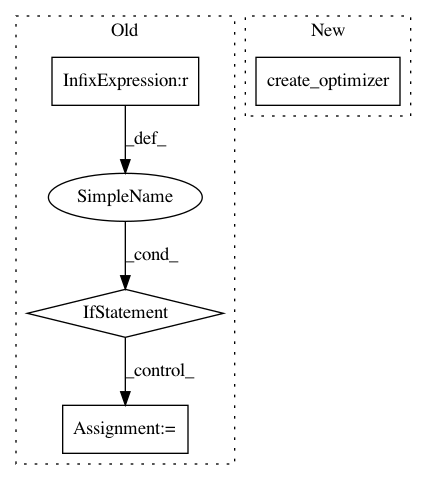

eaff287af9039f2ba1bbf86182a0457799de4033,deepchem/models/tensorgraph/tensor_graph.py,Submodel,get_train_op,#Submodel#,1071
Before Change
loss = self.graph.loss
else:
loss = self.loss
if self.optimizer is None:
optimizer = self.graph.optimizer
else:
optimizer = self.optimizer
// Should we keep a separate global step count for each submodel?
global_step = self.graph._get_tf("GlobalStep")
tf_opt = optimizer._create_optimizer(global_step)
self._train_op = tf_opt.minimize(loss.out_tensor, global_step, variables)
return self._train_op
After Change
loss = self.graph.loss
else:
loss = self.loss
tf_opt = self.create_optimizer()
global_step = self.graph._get_tf("GlobalStep")
self._train_op = tf_opt.minimize(loss.out_tensor, global_step, variables)
return self._train_op
In pattern: SUPERPATTERN
Frequency: 3
Non-data size: 4
Instances
Project Name: deepchem/deepchem
Commit Name: eaff287af9039f2ba1bbf86182a0457799de4033
Time: 2018-03-27
Author: peastman@stanford.edu
File Name: deepchem/models/tensorgraph/tensor_graph.py
Class Name: Submodel
Method Name: get_train_op
Project Name: tensorflow/tpu
Commit Name: 2feab9beb8c59f05ca2e1938f484b6bce638af47
Time: 2019-01-22
Author: frankchn@google.com
File Name: models/experimental/mask_rcnn/mask_rcnn_model.py
Class Name:
Method Name: _model_fn
Project Name: pfnet/optuna
Commit Name: dd8e4a102fa5997dbbffd0d48d65e8bf2acc6fd9
Time: 2018-04-23
Author: t.akiba.65536@gmail.com
File Name: examples/chainer_mnist.py
Class Name:
Method Name: objective